Inform and lead the children with cerebral palsy and their families in
their daily lives.
Solution
A website to inform and lead the children with cerebral palsy and their
families in their daily lives which includes assessment of basic status of
the patients with repsect to predefined scales, suggesting basic
activities, recommending videos and readings, chatting with doctors etc.
What is Serebral Palsy ?
Cerebral palsy (CP) is a group of disorders that affect a person's ability
to move and maintain balance and posture. CP is the most common motor
disability in childhood. Cerebral means having to do with the brain. Palsy
means weakness or problems with using the muscles.
Path
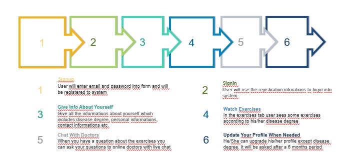
Pages
Signup
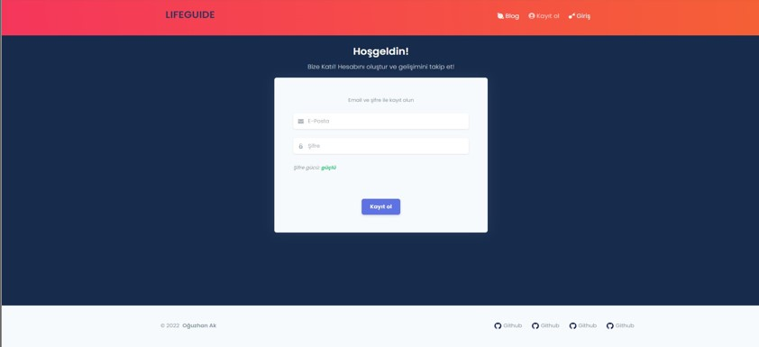
Signin
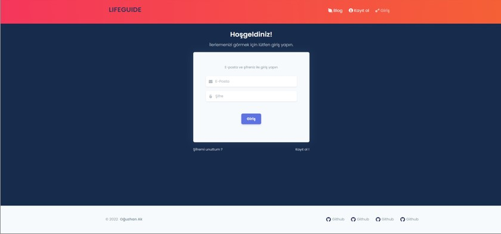
First Login Form
When the user logs into the system for the first time, a form consisting
of 4 steps appears. Unless you fill out and submit this form completely,
you will not be able to access the content.
Step 1: In this step user enters the personal
informations like name, second name, last name, birthday, weight, height
and gender
Step 2: In this step user enters the contact
informations like address, country, city, post code and phone number
Step 3: In this step user enters the extra
informations about herself/himself.
Step 4: In this step user selects the disease
level in this step according to the definitions. If the age is younger
than 12, the family is asked to do it.
First Login Form - Step 1
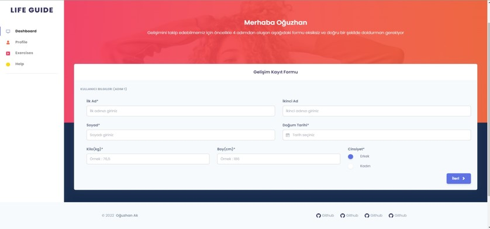
First Login Form - Step 2
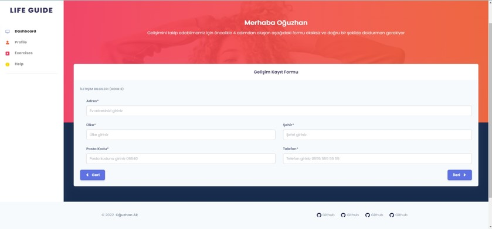
First Login Form - Step 3
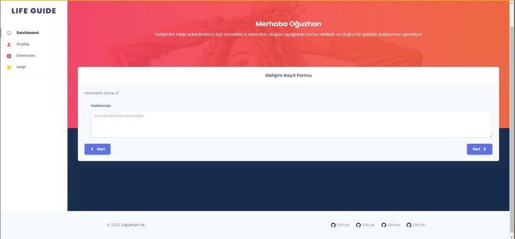
First Login Form - Step 4
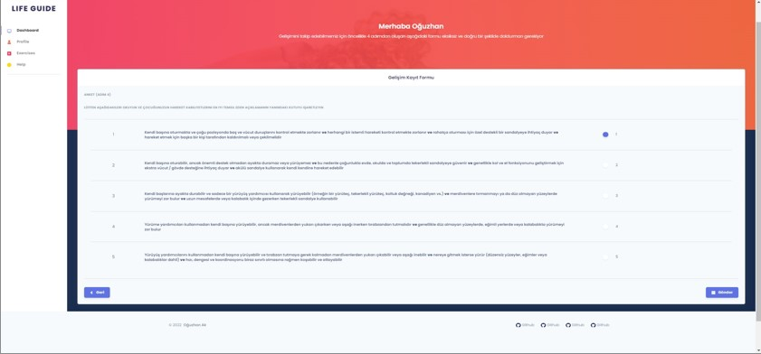
Exercises
In the exercises page user sees some exercises according to his/her
disease degree. He/She can like or dislike the video. Also he/she can
complete or continue to the video.
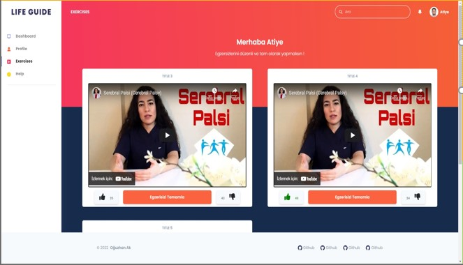
Chat
In the chat page user can ask questions about exercises online.
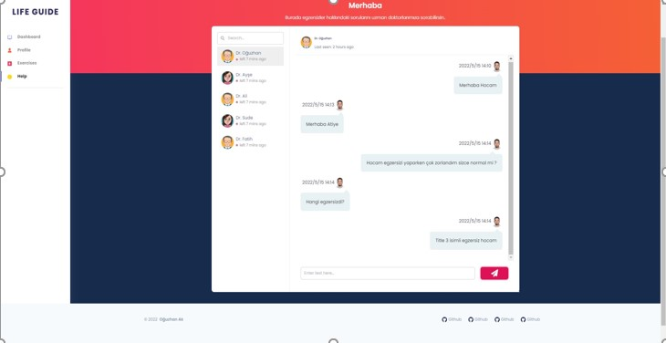
User Profile
User can update his/her informations
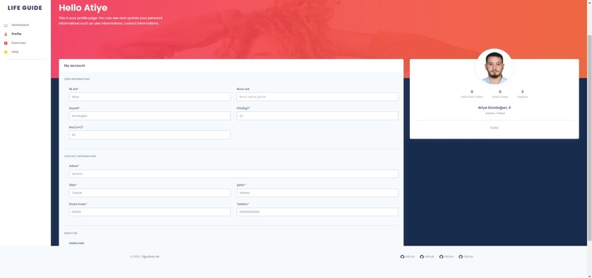
Additional Pages
Blog
Everyone can see this page and learn everything about Serebral Palcy
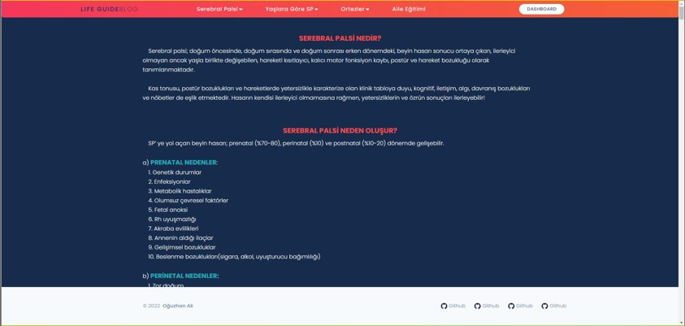
Dashboard
User can see some statistical informations about herself/himself